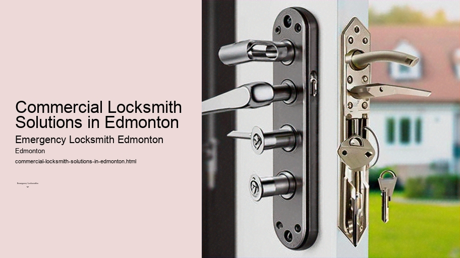

News
24/7 Emergency Locksmith Services
24/7 Emergency Locksmith Services
Emergency Locksmith Services
Residential lockout assistance
Automotive lockout services
Broken key extraction
Emergency lock repair and replacement
Commercial Locksmith Solutions in Edmonton
Commercial Locksmith Solutions in Edmonton
Highsecurity lock installations
Master key systems and rekeying services
Access control system integration
Panic bar installation and maintenance
Residential Locksmith Services in Edmonton
Residential Locksmith Services in Edmonton
Home lockout response
Rekeying existing locks for homes
Installation of new locks and deadbolts
Repairing or replacing residential locks
Automotive Locksmith Services in Edmonton
Automotive Locksmith Services in Edmonton
Car key duplication and replacement
Transponder key programming
Ignition repair and replacement services
Vehicle trunk opening
About Us

Commercial Locksmith Solutions in Edmonton
CCTV installation services Edmonton
Commercial Locksmith Solutions in Edmonton
In the bustling urban landscape of Edmonton, businesses thrive on security and trust.
Highsecurity lock installations
. It is imperative that commercial enterprises safeguard their assets, maintain privacy, and ensure the safety of their employees and customers. This is where commercial locksmith solutions come into play as a critical aspect of business operations in this vibrant Canadian city.
Edmonton boasts a diverse range of businesses, from retail stores to corporate offices, all with unique security needs.
CCTV installation services Edmonton
Commercial locksmiths in Edmonton are equipped to offer a multitude of services tailored to these requirements. Their expertise extends beyond simply cutting keys or repairing locks; they provide comprehensive security solutions that protect businesses against unauthorized access and potential breaches.
One major service provided by commercial locksmiths is the installation of high-security lock systems. These systems are designed to resist picking, drilling, and other forms of forced entry. They often include key control systems that restrict duplication, ensuring that only authorized personnel can obtain copies.
Affordable locksmith Edmonton
For businesses dealing with sensitive information or valuable goods, such sophisticated locking mechanisms are indispensable.
Additionally, modern commercial locksmiths have embraced technological advancements in security by offering electronic access control systems. These systems replace traditional keys with keycards or biometric scanners, allowing for detailed monitoring and control over who enters specific areas within a facility.
Fast response locksmith Edmonton
Access can be customized for each employee, granting them different levels of clearance according to their role within the company.
Emergency lockout services form another crucial facet of what commercial locksmiths provide. Being locked out of one's business premises can result in significant downtime and lost revenue. Commercial locksmiths understand the urgency associated with such situations and typically offer fast response times to resolve lockouts efficiently so that businesses can resume normal operations as soon as possible.
Furthermore, safe installation and servicing are also part of a commercial locksmith’s repertoire in Edmonton.
Lock maintenance service Edmonton
Many businesses require safes for storing cash, documents or other valuables securely on-site.
Car lockout services Edmonton
Locksmiths not only install these safes but also provide regular maintenance checks to ensure they remain reliable over time.
Commercial-grade hardware installation is yet another service offered by professional locksmiths. Doors in high-traffic business environments experience significant wear and tear; hence durable locks, panic bars (for emergency exits), door closers, and other hardware must be installed correctly for both functionality and compliance with safety codes.
An often-overlooked aspect of commercial locksmithing is consultation services on overall building security strategy—advising clients on vulnerabilities within their current system and recommending upgrades or changes tailored to specific industry standards or insurance requirements.
The importance of ongoing support cannot be overstated when it comes to maintaining a robust security framework for any business establishment.
Emergency door opening Edmonton
Residential locksmith Edmonton
Therefore reputable commercial locksmiths in Edmonton also offer maintenance contracts ensuring regular check-ups on all installed hardware thereby preventing sudden malfunctions or compromised security due to wear-and-tear over time.
In conclusion,
commercial locksmith solutions encompass far more than mere lock repairs—they lie at the heart of secure business practices in Edmonton’s dynamic economy providing essential peace-of-mind through state-of-the-art locking mechanisms emergency assistance ongoing maintenance support Businesses looking forward investing quality dependable service would find no shortage skilled professionals ready meet complex challenges inherent protecting both physical intellectual property this ever-evolving market climate
Garage door lock repair Edmonton
Check our other pages :
Emergency Locksmith Services
Panic bar installation and maintenance
Repairing or replacing residential locks
Access control system integration
Broken key extraction
Frequently Asked Questions
What services does an emergency locksmith in Edmonton provide for commercial clients?
An emergency commercial locksmith in Edmonton typically offers lockout assistance, re-keying services, lock repairs and replacements, master key systems implementation, high-security lock installations, and sometimes even safe opening or repair services for businesses.
How quickly can an emergency locksmith arrive at a commercial property in Edmonton?
Most emergency locksmiths in Edmonton offer rapid response times, often aiming to arrive within 30 minutes to an hour of the initial call. However, this time frame can vary depending on the specific location within the city and current traffic conditions.
Are emergency commercial locksmiths available 24/7 in Edmonton?
Yes, many commercial locksmith service providers in Edmonton operate around the clock to ensure businesses have access to immediate assistance whenever they encounter security issues or emergencies outside regular business hours.
Can an emergency commercial locksmith help with upgrading my businesss security system?
Absolutely. Emergency commercial locksmiths are not only trained to respond to lockouts but also skilled in assessing and upgrading existing security infrastructure. They can recommend and install advanced locking mechanisms, access control systems, and surveillance solutions tailored to your businesss unique security needs.